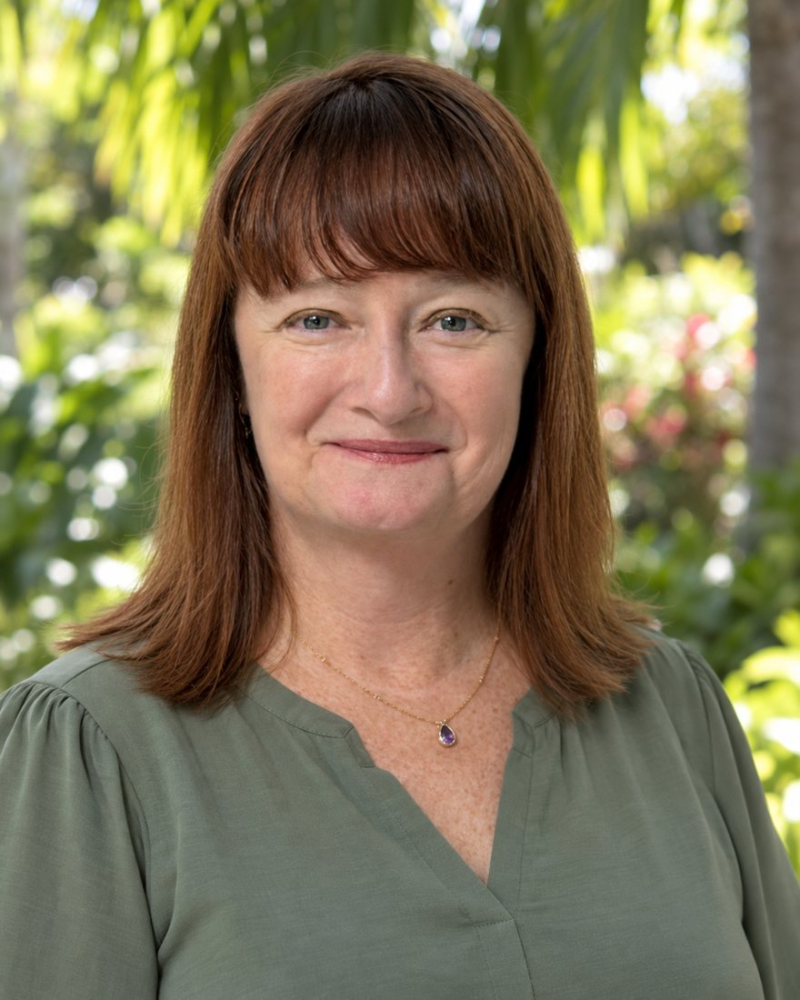
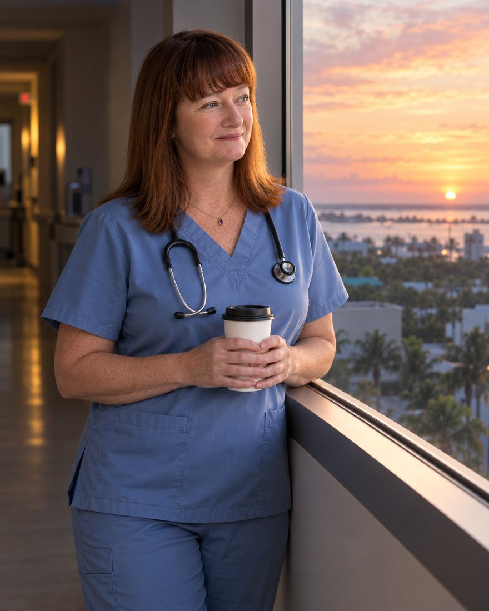
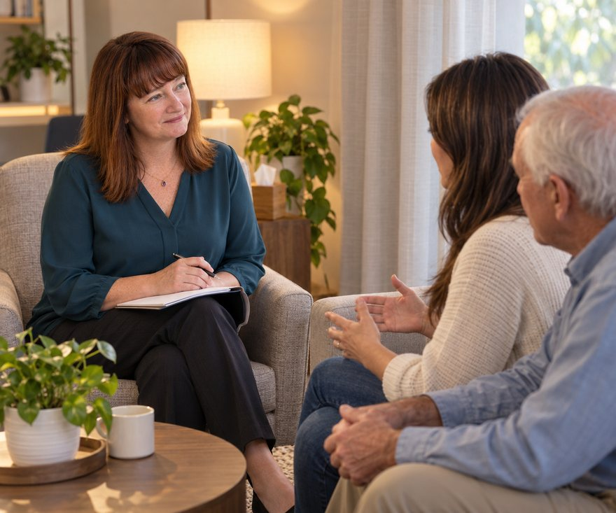
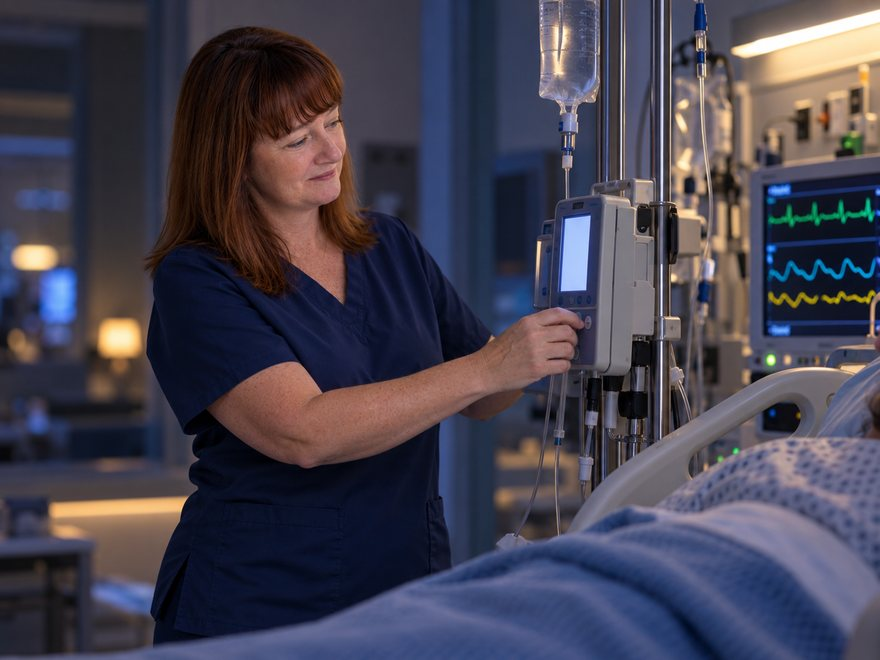
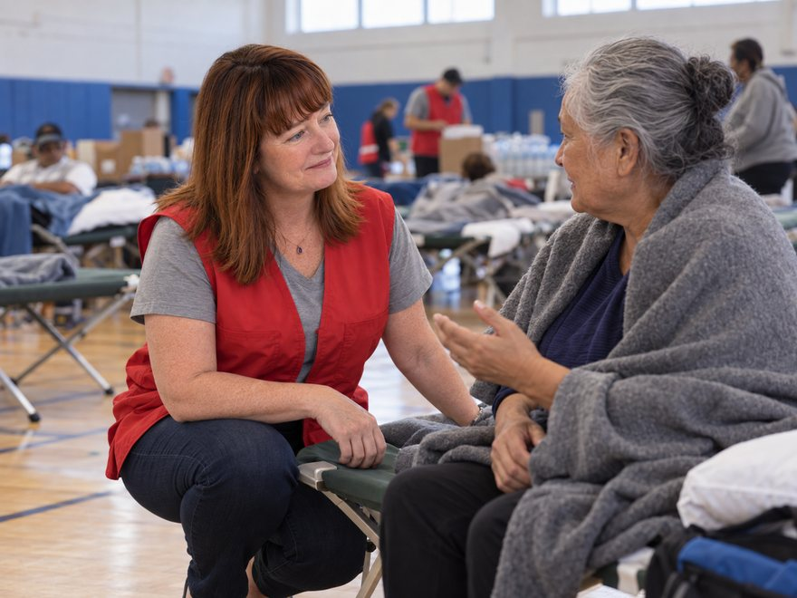
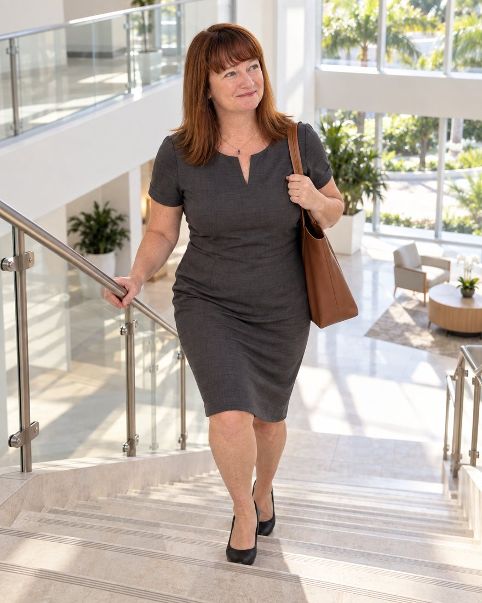
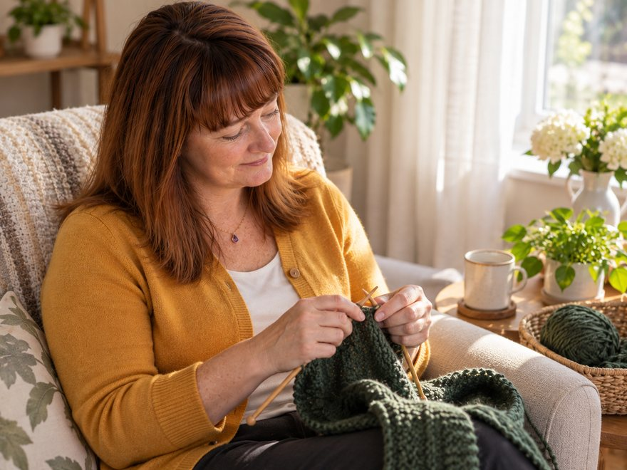

Medication management
Careful attention to complex medication regimens, shaped by years of high-acuity nursing.

About Amy
Amy Salanty is a psychiatric mental health nurse practitioner who came to psychiatry after a long career in intensive care. Her work in neurology and critical care nursing gave her a close view of how illness of the body and of the mind meet, and it is what led her to mental health.
From January 2025 she trained in outpatient psychiatry at Blue Umbrella Psychiatry in Davie, Florida, first through an academic clinical rotation while completing her master's degree, then in continued supervised practice. There she has managed complex medication regimens, helped keep patient flow moving, supported colleagues with challenging cases and worked alongside patients' families.
She holds a Master of Science in Nursing in psychiatric and mental health nursing from Wilkes University, and lives in Hollywood, Florida.
Career
Before psychiatry, Amy worked in surgical, medical and trauma intensive care units across Florida.

Blue Umbrella Psychiatry, Davie, Florida
Clinical rotation from January 2025 through her September 2025 graduation, then continued supervised training in outpatient psychiatry.
AdventHealth Daytona
High-acuity care for critically ill patients.
Courtenay Springs Village, Merritt Island, Florida
Postoperative recovery and rehabilitation.
Wuesthoff Medical Center, Melbourne, Florida
Led a 12-bed medical intensive care unit overnight: scheduling, staff continuing education compliance and co-leading department meetings. Primary responder for emergency codes and trauma cases, stabilising patients and coordinating transfers to larger trauma centres.
Holmes Regional Medical Center, Melbourne, Florida
Intensive care at a Level II trauma centre.
Florida Hospital Memorial Center
Parrish Medical Center
Focus
Careful attention to complex medication regimens, shaped by years of high-acuity nursing.

Time with the people around a patient, who are often part of the care.

A deep grounding in intensive care and neurology, where her interest in mental health began.

A volunteer with the American Red Cross in Disaster Health Services and Disaster Mental Health Services.
Looking ahead
Amy plans further nurse practitioner study in adult and geriatric care, to meet the combined medical and mental health needs of older adults. Her longer-term goals are an independent private practice and nursing licences in more than one state.
Education
Professional memberships
Gallery


Every picture of Amy Salanty on this page is an AI-generated illustration, produced with her approval from a reference photograph. They are not photographs of real events.
Outside the clinic
Away from work, Amy enjoys live performances by local bands, dancing, knitting, reading, travelling and television.
Contact
For professional enquiries, send Amy a message and she will reply by email.
This form is not for medical emergencies. In a crisis, call or text 988, or call 911.